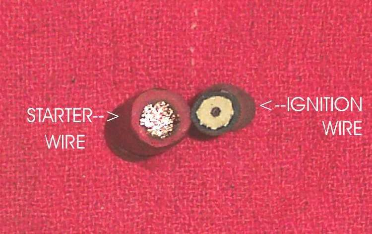
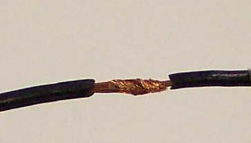
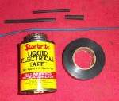

Bike wire is many thin copper strands inside coloured insulation. The colours and stripes tell which circuit a wire belongs to, and the wiring diagram for your bike shows them. Solid household wire is not used on a bike; it breaks from vibration.
What it does
It carries current from the battery or generator to each device and back through the frame to earth. Thick wire is used for heavy loads like the starter. Thin wire does for signals and small bulbs. A wire that is too thin for its load gets hot and drops voltage.
Signs it is worn or failing
- Broken strands inside good-looking insulation, often near the steering head, swingarm or battery.
- Insulation that is cracked, melted or rubbed through: Fuse keeps blowing, Burning smell from the wiring.
- Faults that come and go with movement: Electrical faults come and go.
- Voltage present at one end of a wire but not the other. A meter on continuity shows a good wire as a very low reading and a broken wire as open. See Find a wiring fault.
- A thin wire used for a high-current job, or an accessory wired without a fuse: Problems after fitting accessories or an alarm.
When to replace it
Repair a short damaged section with a proper joint, or replace the whole run if it is brittle, burnt or chafed along its length. Never rely on a twist of tape.
What to match when buying
- Same size (or thicker) than the original for the same load.
- Stranded copper, with insulation rated for heat and oil.
- Same colour as the original, so the diagram still matches. Use sleeving or tape to mark a wire if no matching colour is found.
- Battery and starter cable is much thicker than lighting wire.
Fitting notes
- Route with the original clips. Leave a little slack at the steering head and swingarm, and keep wire away from sharp edges and the exhaust.
- Fuse every added circuit near the battery. See Wire an accessory safely.
- Use terminals and joints made for the wire size. See Choose the right wire and Join wires with crimp connectors.